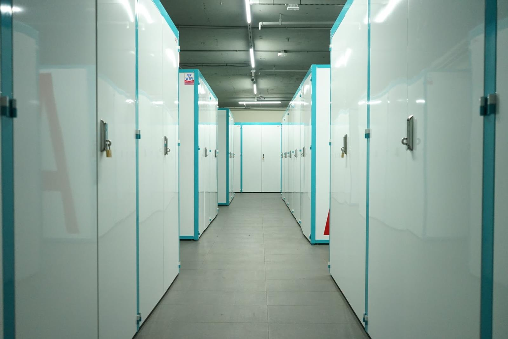

模組與規模
來源敘述記錄一套完整迷你儲物單元，包含超過 50 個元件；標準儲物單元約 3.4 m³，並可透過其他元件調整尺寸與功能。
ANONYMOUS MODULAR STORAGE PROJECT
匿名城市儲物空間案例：以可複製的模組化儲物單元、K/D 結構與多種金屬元件回應空間服務需求。
討論模組化儲物與金屬結構需求
原始專案敘述指出，城市人口需要更多儲物空間，而客戶希望把迷你儲物單元發展成可在不同城市複製的商業模組。這不是單一櫃體採購，而是需要尺寸、功能、運輸與後續擴充一起被考慮的系統問題。
來源敘述記錄一套完整迷你儲物單元，包含超過 50 個元件；標準儲物單元約 3.4 m³，並可透過其他元件調整尺寸與功能。
來源記錄使用鋼板、鋼管與鋼線，並採用客製粉體塗裝方向；原始文字另描述其對濕氣與刮傷的考量。
單元採 K/D（knock-down）結構，原始敘述將其與降低運輸成本的需求連結；正式包裝與運輸條件未在公開頁面推定。
來源記錄帶門的儲物單元、可調整尺寸與功能的元件，以及供小型物品使用的雙層儲物櫃。
來源以第一人稱記錄設計完整迷你儲物單元與元件開發；正式合約分工、供應範圍與 Big Fame 的法律角色仍需依專案文件確認。
原始敘述記錄該迷你儲物空間已開放使用，業主可沿用原始設計複製到其他城市；客戶名稱、日期、最終店數、數量與授權未公開。
本頁為匿名專案紀錄；客戶名稱、日期、正式數量、最終交付地、價格、合約分工與公開授權需逐案確認。
適合需要模組化儲物櫃、可拆裝結構、跨據點複製或多元金屬元件整合的商業空間需求。正式尺寸與承重需依圖面和樣品確認。
請提供單元尺寸、門片與鎖具需求、功能變體、數量、場地條件、運輸方式、目標時程與圖面或現有樣品。